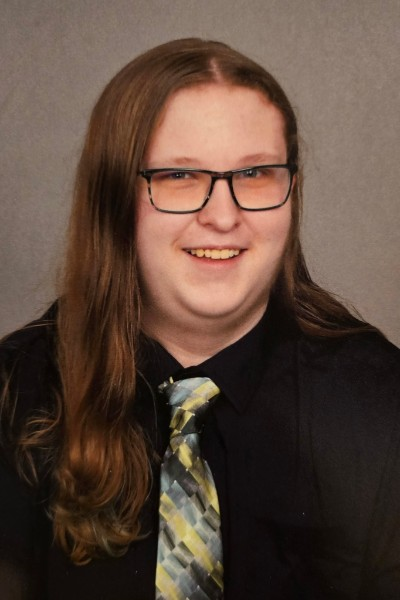

Welcome to my portfolio, a collection of my college works, using subjects such as literature, communication, and technical writing. The purpose of this portfolio is to share my own skills in various genres of literatures by providing examples of contributions. Outside of this college portfolio, I have another portfolio.
Imagination, the key to your future. It helps you discover new long-term interests and learn skills you would otherwise never have. Creative Literacy is the drive to learn new creative skills; whether you use it for yourself or others is entirely up to you.
When I was a kid, I grew up with a lot of fantasy novels, Harry Potter, Ender's Game, etc, it really helped with my imagination as I imagined myself being in some of these fantasy worlds, like Hogwarts. Alongside reading, I grew up with video games from various eras, Super Mario Brothers on the NES, Wii Sports, and Minecraft. Fantasy media, primarily books and video games, served as the foundation for other interests and skills I would later develop in life.
On a boring day of April 1st, 2020, I was told to do something that required learning. As I had effectively graduated 6th Grade months earlier than expected due to the pandemic at the time, one of the things I stumbled upon was a programming website called Scratch. As I had never programmed before, I decided to give it a try, starting with a relatively basic math game. I really liked the idea of creating my own projects to the point that I decided to learn more block coding to make even more projects, and from that moment forward, my life trajectory changed. Now, rather than wanting to play video games for a living, I wanted to create things others could enjoy, giving me a reason to pursue programming further.
Around August of 2022, as I was just about to start high school, I noticed that one of the clubs there was my school district's FIRST Robotics Competition team - Team 6078 - and, as I desperately wanted to learn more about various types of programming languages, as the only type I grasped at the time was block coding, I signed up. I believe around November of that year, I finally got to be a part of a Robotics team, still driven by my desire to create things, I wanted to learn as much Java as possible to try and make a piece of the robot, now, at the time of my first kickoff, I did not really learn much Java as it was quite different to what I was used to, and at that time, there was one or two people who effectively did the entire robot.
My second year, despite being more or less the same as the first year, of not really getting to try and test mechanisms out on a robot, I was told to try to figure out things related to a Limelight Camera, primarily Apriltags. At the time, I was not sure how it would work, as the most I had done was build a robot drive, so I researched as much as I could about Limelight. Eventually, I had a chassis I could drive and try to test out Limelight, surprisingly, even though I had made some basic code that just spat out the Apriltag ID, I had some semblance of working code that did what was requested, of course, when it came time for the final robot, as I presumed that because nothing was mentioned to me that I effectively did nothing until I think my father mentioned it to me that with the help of my code our 2024 robot, The Big Cheese, actually had working targetting for that year.
During my third year doing robotics, I learned how to make a subsystem, as that year the robot was more student-led, I actually helped out with making the climber on MOAT, our 2025 robot, making sure that our robot could potentially be able to do the deep climb for Reefscape, even though I actually did a lot more that year, our team did not qualify for the State Competition unlike the 2 years I had been on the team before, or win any awards, albeit, I like to believe the reason was because there were too many fragments of design changes over the course of the build season. My fourth year, as I mostly wanted to allow others to be able to make the robot code that year, I mostly stepped back, trying to figure out LEDs, as in 2024, I wanted to see about putting LEDs on The Big Cheese, but did not know, during this year, I learned how to get the LEDs to work, and how to change the patterns using game data, I also made sure that any work I did was documented for the sake of others being able to look at it and see what things did.
Meanwhile, as I started my third year of Robotics and High School, I ended up attending the Wilson Talent Center to learn even more programming. During my first year there, I primarily learned about more basic Java rather than the specialized Java I learned for Robotics. I also learned about other game engines besides Unity, including GameMaker Studio and the Godot Game Engine. I decided to use the latter for a game I started that year, and I also got a certification in Java. In my second year, I mostly focused on other projects I decided to take on at the time.
As I started my journey with only the Creative Literacy of wanting to make fun games for others, I eventually learned new skills. I developed a new hobby from that Literacy.
A while ago, around 5th-6th Grade, I believe, during a standard Scouting meeting, the majority of the people in my troop decided to have a free day. During one of those free days, we started playing Dungeons and Dragons. During that meeting, I decided to join in since others were doing it. At that time, there was zero ounce of freedom, and I had never played Dungeons and Dragons before, so I did not know how to play. Eventually, after joining a new troop, as the one I was part of stopped existing after the pandemic, one of the other scouts in that troop decided to invite me to Dungeons and Dragons. I initially assumed it would be similar to my last experience, where I could not do what I wanted. However, during that short campaign, I actually enjoyed something I assumed I had disliked, which inevitably helped me find another hobby to try and share with friends. Although my first few attempts at being a Game Master were chaotic and maybe could have used some polish, I drew on creative Literacy from past experiences playing this game to try to create a fantasy world my friends would enjoy.
These experiences helped shape my Creative Literacy, whether it was gaining a base for what Creative Literacy could become or gaining new skills and hobbies to share my own Creative Literacy. I hope to continue, even when busy with other things, to share my Creative Literacy with others and to inspire them to use what is effectively a key to the kingdom: their imagination, their Creative Literacy.